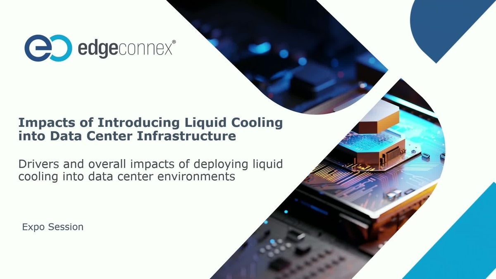

EdgeConneX looked at its entire library of operational procedures and decided to throw them out and start over. Every standard operating procedure. Every maintenance checklist. Every emergency response protocol. Rewritten from scratch. Then, rather than distribute the new documents as PDFs and hope people read them, the company built a dedicated Global Training Center to teach the material hands-on.
This is an admission. A productive one, but an admission nonetheless. The procedures that EdgeConneX developed over the past decade for operating air-cooled data centers are not sufficient for the facilities it is building now. The thermal management systems, the power densities, the redundancy architectures, the failure modes. Everything has changed. Updating the old procedures would have been a half-measure. EdgeConneX chose the full measure.
The rewrite covers existing operational areas with updated protocols, but the more interesting part is the new procedures for areas that EdgeConneX had never previously managed. Chief among these: direct-to-chip liquid cooling. This is not an incremental addition to the operations manual. This is a fundamentally different discipline. Liquid cooling systems introduce pressurized fluid loops, coolant chemistry management, leak detection and containment, pump redundancy, and thermal cycling behavior that air-cooled facilities never dealt with.
An operations technician who has spent ten years managing CRACs and air handlers cannot walk into a room full of CDUs and manifolds and perform at the same level. The skills are different. The failure modes are different. The response times are different. In an air-cooled facility, a cooling failure gives you minutes to respond before thermal throttling begins. In a liquid-cooled facility with direct-to-chip cold plates, a coolant flow interruption gives you seconds. The procedures have to reflect that difference, and the people executing those procedures need to have practiced them under realistic conditions.
EdgeConneX is not writing these procedures in the abstract. The company's "Ingenuity" platform supports rack densities exceeding 600 kW per rack. That is not a typo. Six hundred kilowatts in a single cabinet. At that density, the thermal energy produced by a single rack is equivalent to a small commercial kitchen, concentrated into a footprint of roughly 6 square feet. The cooling system required to manage that heat load is not a piece of equipment bolted onto a building. It is a core building system, as fundamental as the electrical switchgear.
The real-world proof point is in Chicago. EdgeConneX has a 23 MW single-tenant, build-to-density facility using hybrid cooling that is scheduled to be ready for service in 2026. Hybrid cooling means a combination of air and liquid systems, likely with liquid cooling handling the GPU clusters and air cooling managing the lower-density storage, networking, and control plane equipment. This is the architecture that most operators are converging on for AI-focused facilities. Pure liquid cooling is too inflexible for mixed workloads. Pure air cooling cannot handle the densities. Hybrid gives operators the ability to match the cooling method to the workload type within the same building.
A 23 MW facility with hybrid cooling and rack densities up to 600 kW requires an operations team with a skill set that did not exist five years ago. These technicians need to understand electrical distribution, mechanical cooling, fluid dynamics, IT hardware, and building automation systems. They need to be able to troubleshoot a pump failure at 2 AM while simultaneously managing the thermal impact on adjacent racks. The training center exists because this skill set cannot be hired off the street. It has to be built.
The data center industry talks constantly about power constraints. Can we get enough megawatts from the grid? The industry talks about supply chain constraints. Can we get enough transformers, switchgear, and cooling equipment? The industry talks less about the constraint that is harder to solve than either of those: people.
You can build a power substation in 18 months. You can order a CDU from Vertiv or Schneider and get it delivered in 12 to 18 months. Training a competent data center operations engineer who can safely manage a high-density liquid-cooled facility takes two to three years of supervised experience after whatever classroom training you provide. The workforce pipeline is the longest lead time item in the entire data center supply chain, and almost nobody is investing in it at the scale required.
EdgeConneX decided to solve this internally rather than wait for the market to produce the workers it needs. That decision tells you everything about where the company thinks the constraint is. If the problem were equipment availability, they would be building a factory. If the problem were power, they would be investing in substations. They built a training center. The bottleneck is people.
EdgeConneX is a mid-size operator. It is not a hyperscaler with unlimited resources. The fact that a company of this scale decided that the workforce problem was severe enough to justify building a dedicated training facility, rewriting every procedure from scratch, and creating a formalized curriculum for liquid cooling operations sends a clear signal to the rest of the industry. The larger operators, the Equinixes and Digital Realtys and CyrusOnes, face the same workforce gap at larger scale. The smaller operators face it without the resources to build their own training infrastructure.
The industry needs a solution that goes beyond individual companies training their own people. Community colleges, trade schools, and technical institutes need to develop data center operations programs that include liquid cooling as a core module, not an elective. Equipment vendors need to provide training and certification programs that are standardized across the industry, not proprietary to their own products. And operators need to accept that investing in workforce development is as important as investing in physical infrastructure.
EdgeConneX built a training center because the alternative was deploying billion-dollar facilities with undertrained teams. The rest of the industry faces the same choice. Build the workforce or risk the infrastructure. There is no third option.